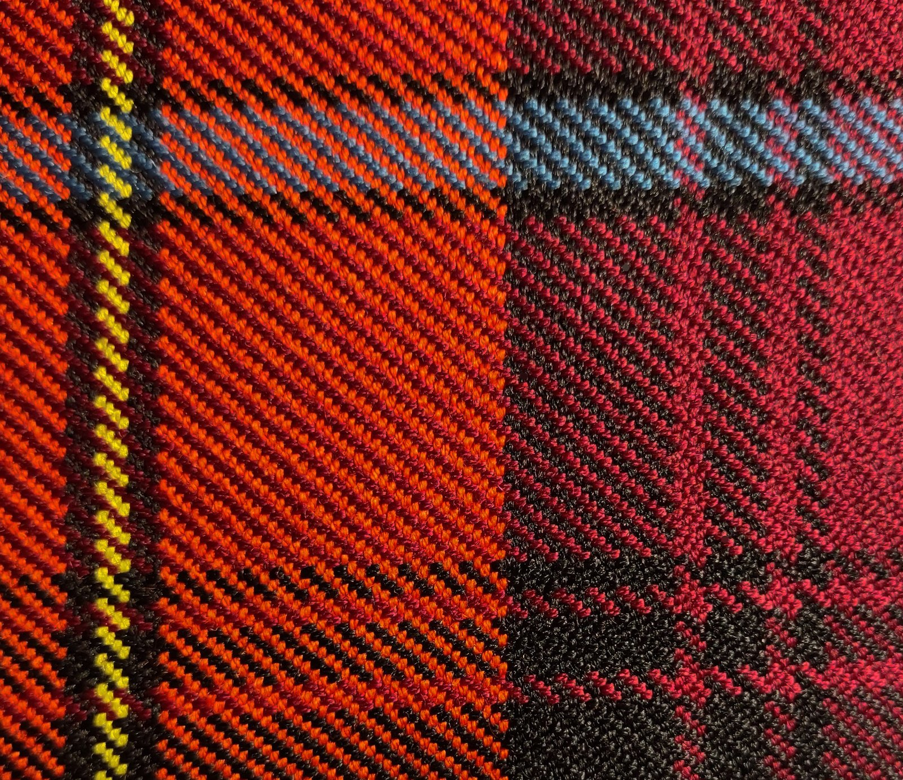
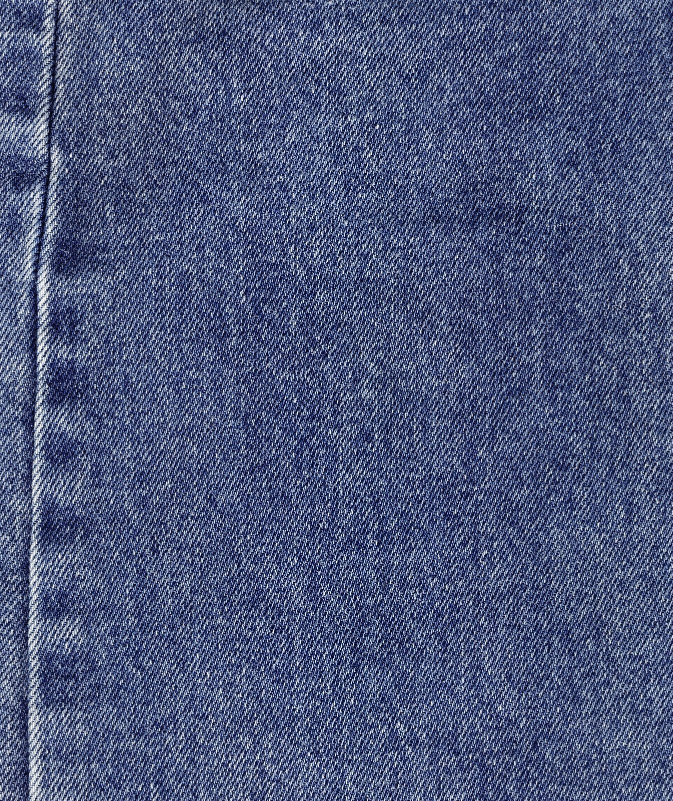
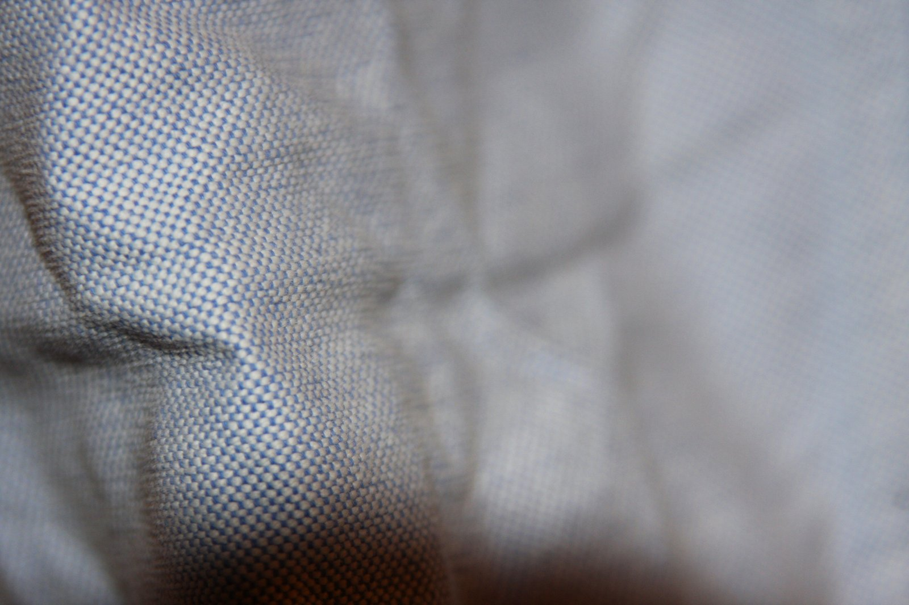
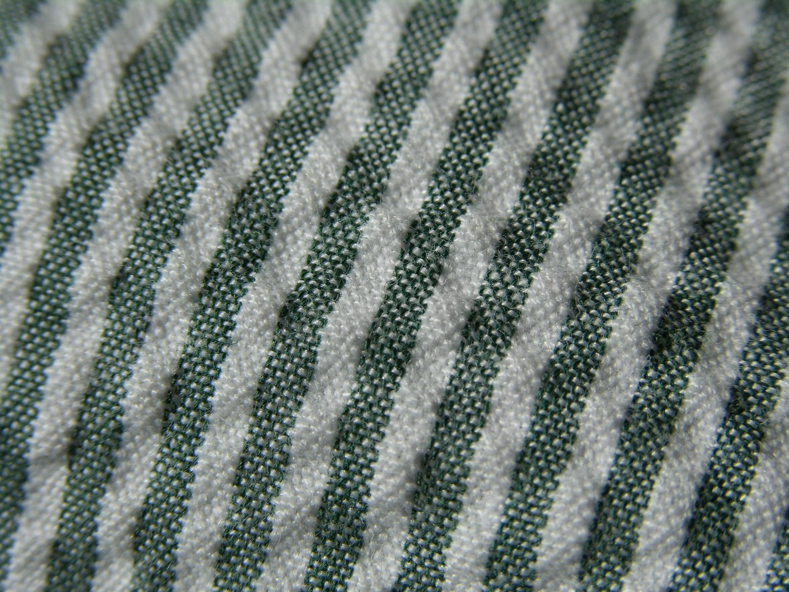
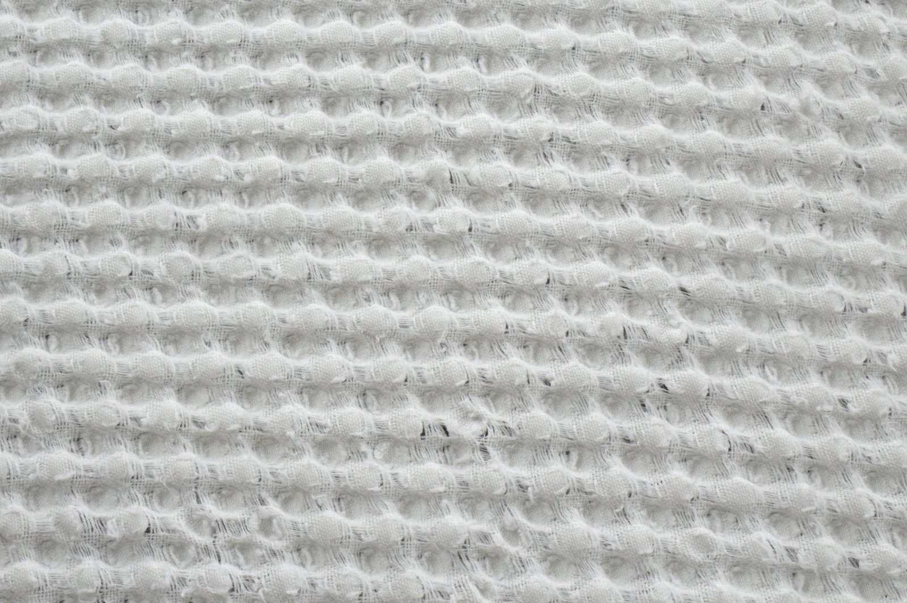
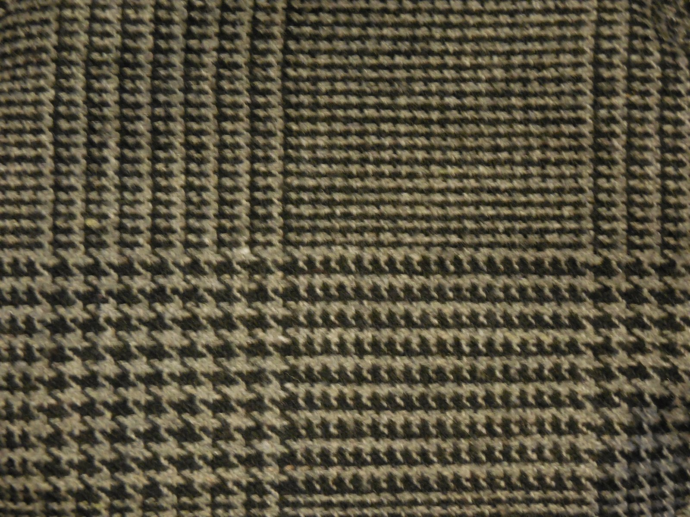
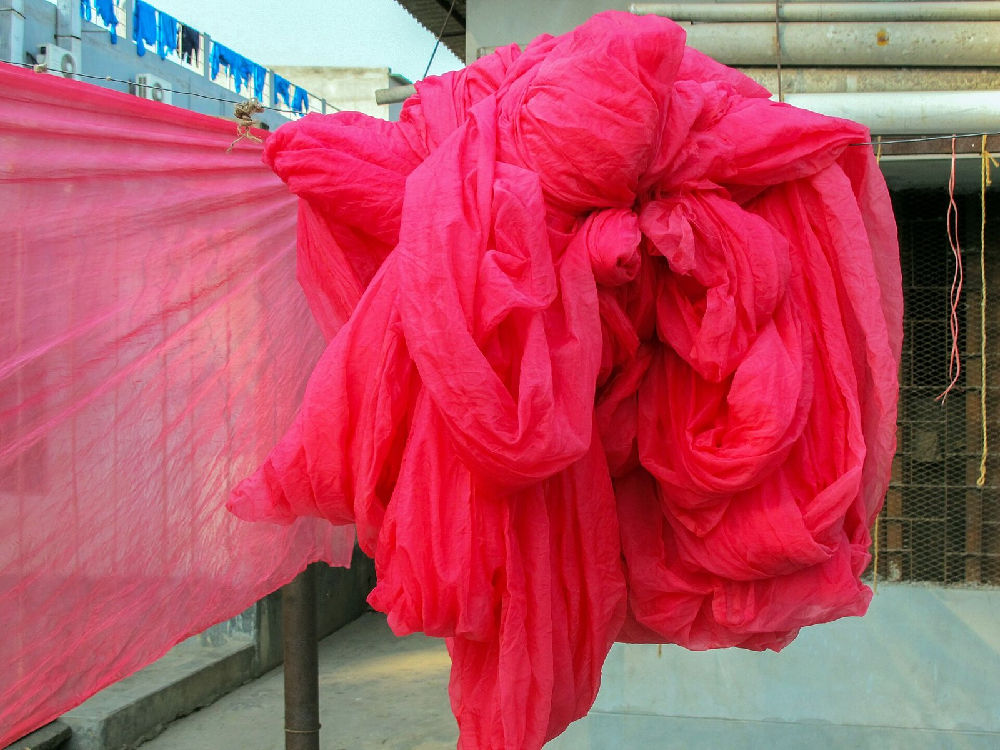

Henglong Yarn-Dyed Library
explore fabrics
按图案、类型与用途浏览色织布面 · 图鉴式目录













没有符合筛选的布面，试试清除 Pattern / Type / Use。
Henglong Yarn-Dyed Library
按图案、类型与用途浏览色织布面 · 图鉴式目录







没有符合筛选的布面，试试清除 Pattern / Type / Use。